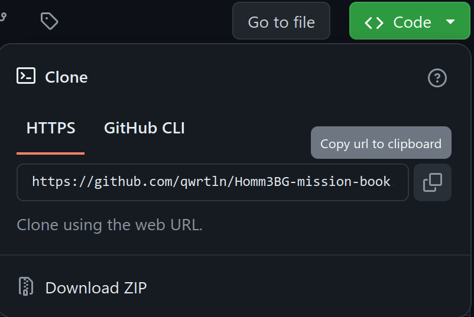

Local Setup
In order to contribute, you'll need a minimum of a LaTeX distribution, Inkscape, Perl, and git. Please read the instructions for your operating system (or container).
Windows
Install required software
To work on the document, download and install the following:
-
MiKTeX - a LaTeX distribution for Windows.
-
Inkscape - download the
.exeinstaller, not.msi. While installing tickAdd Inkscape to the System Pathoption. Inkscape won't work otherwise, and the document won't compile. -
git to commit files to the repository and provide command line environment.
-
Perl - download the Strawberry Perl binary release, it enables the build script.
-
ImageMagick - a tool for processing images.
-
Ghostscript - download the 64 bit AGPL release. It will optimize PDF files.
To work on translations, download and install the following:
-
Poedit - a translation editor for files in the
translations/directory. -
GNU gettext - download and install the 64-bit static release.
-
delta - download the tool, unzip it, and put the
delta.exefile into theC:\Program Files\Git\mingw64\bindirectory. It helps you to view updates in the files to translate.
To edit the TeX files conveniently, install one of the following:
-
VSCode with TeX Workshop extension, or
-
TeXstudio, or
GitHub Account
If you don't have an account on GitHub, please create one now.
Fork and clone the repository
In the Mission Book's GitHub repository, click "Fork":

Go to your repositories in GitHub, open the forked Mission Book repository, click the green "Code" button, and copy the clone URL:

Open the git program you installed. Run this command:
A new directory titled Homm3bg-mission-book should appear now in your file explorer.
Building the project
In the git bash console, run this command (see the build script for details):
This will build the draft scenarios book. If the build is successful, it will open the PDF file for you, and you are all set to start working on your scenario. Check out the how-to guide for writing your first scenario.
If you're seeing an error about a missing file, please configure MiKTeX to download missing packages automatically.
Translate
Check out the translation guide for translating the scenarios.
MacOS
You can install everything using Homebrew:
Fork the repository and clone it. To build the project, it's best to use the script (see the build script for details):
For building a single scenario (the -s flag, useful if you're working on one), you also need newer versions of bash and grep than the ones MacOS ships with:
Then, you can use the script like this (see best practices for details):
To work on localizations, make screenshots, optimize PDFs, etc., you will need some additional tools:
Linux
Install a texlive distribution, inkscape, and perl using your package manager.
Fork and clone the repo. To build the project, it's best to use the script (see the build script for details):
To work on localizations, make screenshots, optimize PDFs, etc., you will need some additional tools:
- entr
- ghostscript
- git-delta
- imagemagick
- po4a
- poppler-utils
Container
There is also a container available, which contains all the necessary tools.